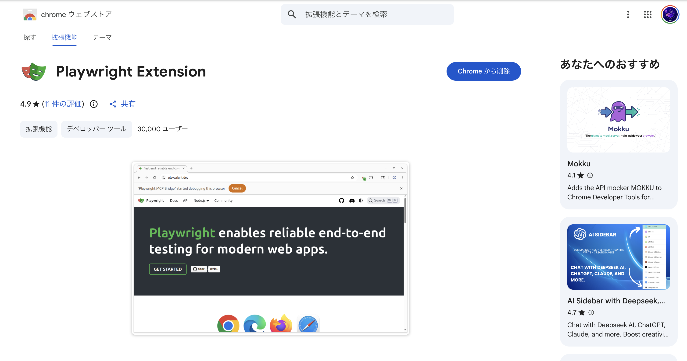
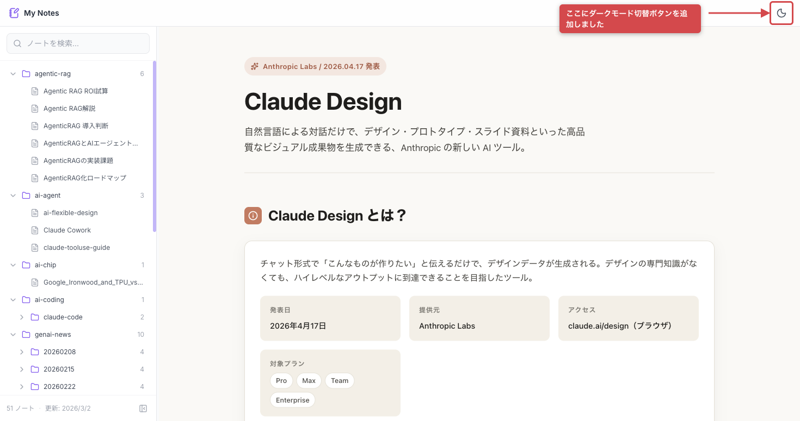
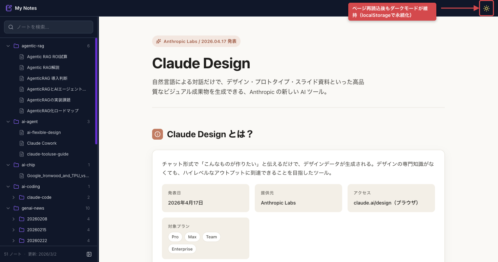
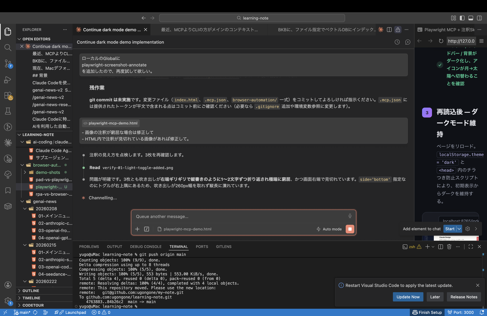

— 手作業の確認とスクショ説明、どこまで自動化できるか試した記録
動作確認のたびにブラウザを手で触り、撮ったスクショは後で見ても何が要点か分からない。
毎回手作業で確認
同じ画面を開いてクリックしてリロードして…を人手で繰り返している。再現も共有も面倒。
スクショだけでは伝わらない
チームに送っても「で、どこを見ればいいの？」となり、結局口頭やテキストで補足している。
注釈を手で描く手間
矢印や吹き出しを画像編集ツールで毎回描き足す。位置合わせも地味に時間を食う。
Playwright MCP は、Claude などの AI エージェントが MCP ツール経由で実ブラウザを操作できるようにする仕組みです。ページ遷移・クリック・入力・スクリプト実行・スクショ撮影を、人手を介さず指示だけで実行できます。
本デモは ブラウザ拡張連携モード（Playwright Extension） を使用。お使いの Chrome に拡張を入れるだけで、ログイン済みの実ブラウザをそのまま自動操作できます。

※ 拡張インストール後、発行されるトークンを MCP 設定に登録すると連携できます。
ここからは実例です。題材として learning-note にダークモード機能を追加し、その動作確認を
Playwright MCP で自動操作 → playwright-screenshot-annotate Skill で赤枠・矢印・吹き出しを付けてからスクショ撮影しました。
手作業ゼロで、下のようなチームにそのまま見せられる検証エビデンスが生成されます。
AI への指示だけで、ブラウザ操作・注釈付け・スクショ撮影が進んでいく様子を録画しました。
※ 動画はクリックで再生／ダブルクリックで拡大できます。
ヘッダー右端にダークモード切替ボタン（data-testid="dark-mode-toggle"）を新規追加した。

MCPでトグルをクリック。<html> に dark クラスが付与され、シェル全体が暗転する。
ページをリロード。localStorage.theme = 'dark' と <head> 内のチラつき防止スクリプトにより、初期表示からダークを維持する。

html.dark が維持され、設定が永続化されていることを確認最初の注釈は吹き出しが窮屈で読みづらいものでした。そこを AI に口頭レベルの指示で伝え、 位置やレイアウトを調整し直しています。完璧な自動生成ではなく、人が要点だけ指示して仕上げる—— 実際のやり取りはこんな雰囲気です。

※ 画像はクリックで拡大できます。